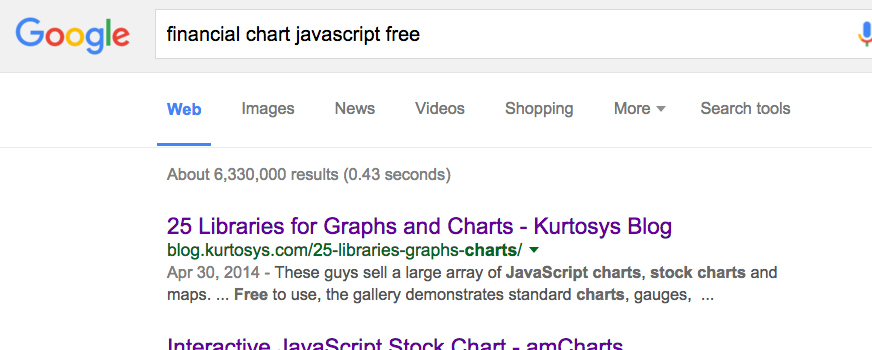

Learning by Example
mbostock's blocks
Let’s Make a Bar Chart, Parts 1-3
Bar Chart with Negative Values

Task Master :
The Financial page needs a chart.
Developer:
Choosing a library with ready to use charts seems like the easy solution, until you start getting requests to customize.
JavaScript library
Data visualization using HTML, SVG, CSS
Declarative, data-driven DOM manipulation
var data = [];
var selection = svgG.selectAll("circle")
.data(data);
selection.transition()
.duration(750)
.attr("r", function (d) { return d; });
selection.enter().append("circle")
.attr("cy", function (d, i) { return 100 * i + 50; })
.attr("cx", 100)
.attr("r", function (d) { return d; });
selection.exit().remove();
Community contributions of reusable data viz work
Example: Sankey plugin
It is fun (for JavaScript developers)!